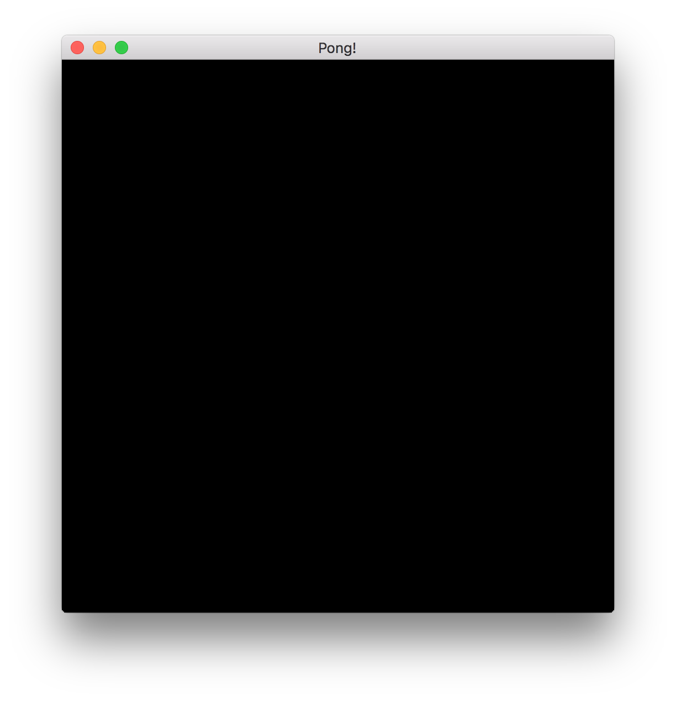

Setting up the project
In this chapter, we will go through the basics of setting up the amethyst project, starting the logger, opening a window and preparing a simple rendering setup.
Creating a new project
Let's start a new project:
cargo new pong
Update the dependencies in the project's Cargo.toml so that it contains:
[package]
name = "pong"
version = "0.1.0"
authors = []
edition = "2018"
[dependencies.amethyst]
version = "0.15"
features = ["vulkan"]
Alternatively, if you are developing on macOS, you might want to use the metal rendering backend instead of vulkan. In this case, you should change the features entry in the amethyst dependency table.
[dependencies.amethyst]
version = "0.15"
features = ["metal"]
We can start with editing the main.rs file inside src directory.
You can delete everything in that file, then add these imports:
//! Pong Tutorial 1
use amethyst::{
prelude::*,
renderer::{
plugins::{RenderFlat2D, RenderToWindow},
types::DefaultBackend,
RenderingBundle,
},
utils::application_root_dir,
};
We'll be learning more about these as we go through this tutorial. The prelude
includes the basic (and most important) types like Application, World, and
State. We also import all the necessary types to define a basic rendering pipeline.
Now we have all the dependencies installed and imports prepared, we are ready to start working on defining our game code.
Creating the game state
Now we create our core game struct:
pub struct Pong;
We'll be implementing the SimpleState trait on this struct, which is
used by Amethyst's state machine to start, stop, and update the game.
impl SimpleState for Pong {}
Implementing the SimpleState teaches our application what to do when a close signal
is received from your operating system. This happens when you press the close
button in your graphical environment. This allows the application to quit as needed.
Now that our Pong is already a game state, let's add some code to actually get things
started! We'll start with our main() function, and we'll have it return a
Result so that we can use ?. This will allow us to automatically exit
if any errors occur during setup.
extern crate amethyst;
use amethyst::prelude::*;
fn main() -> amethyst::Result<()> {
// We'll put the rest of the code here.
Ok(())
}
Note: The SimpleState is just a simplified version of State trait. It already implements a bunch of stuff for us, like the
State'supdateandhandle_eventmethods that you would have to implement yourself were you using just a regularState. Its behavior mostly cares about handling the exit signal cleanly, by just quitting the application directly from the current state.
Setting up the logger
Inside main() we first start the amethyst logger with a default LoggerConfig
so we can see errors, warnings and debug messages while the program is running.
extern crate amethyst;
fn main() {
amethyst::start_logger(Default::default());
}
From now on, every info, warning, and error will be present and clearly formatted inside your terminal window.
Note: There are many ways to configure that logger, for example, to write the log to the filesystem. You can find more information about how to do that in Logger API reference. We will use the most basic setup in this tutorial for simplicity.
Preparing the display config
Next, we need to create a DisplayConfig to store the configuration for our game's
window. We can either define the configuration in our code or better yet load it
from a file. The latter approach is handier, as it allows us to change configuration
(e.g, the window size) without having to recompile our game every time.
Starting the project with amethyst new should have automatically generated
DisplayConfig data in config/display.ron. If you created the
project manually, go ahead and create it now.
In either case, open display.ron and change its contents to the
following:
(
title: "Pong!",
dimensions: Some((500, 500)),
)
Note: If you have never run into Rusty Object Notation before (or RON for short), it is a data storage format that mirrors Rust's syntax. Here, the data represents the
DisplayConfigstruct. If you want to learn more about the RON syntax, you can visit the official repository.
This will set the default window dimensions to 500 x 500, and make the title bar say "Pong!" instead of the sad, lowercase default of "pong".
In main() in main.rs, we will prepare the path to a file containing
the display configuration:
extern crate amethyst;
use amethyst::{
utils::application_root_dir,
Error,
};
fn main() -> Result<(), Error>{
let app_root = application_root_dir()?;
let display_config_path = app_root.join("config").join("display.ron");
Ok(())
}
Creating an application
In main() in main.rs we are going to add the basic application setup:
extern crate amethyst;
use amethyst::{
prelude::*,
utils::application_root_dir,
};
fn main() -> Result<(), amethyst::Error> {
struct Pong; impl SimpleState for Pong {}
let game_data = GameDataBuilder::default();
let app_root = application_root_dir()?;
let assets_dir = app_root.join("assets");
let mut game = Application::new(assets_dir, Pong, game_data)?;
game.run();
Ok(())
}
Here we're creating a new instance of GameDataBuilder, a central repository
of all the game logic that runs periodically during the game runtime. Right now it's empty,
but soon we will start adding all sorts of systems and bundles to it - which will run our game code.
That builder is then combined with the game state struct (Pong), creating the overarching
Amethyst's root object: Application. It binds the OS event loop, state machines,
timers and other core components in a central place.
Then we call .run() on game which starts the game loop. The game will
continue to run until our SimpleState returns Trans::Quit, or when all states
have been popped off the state machine's stack.
Now, try compiling the code.
Note: Please note that when compiling the game for the first time, it may take upwards an half an hour. Be assured, though, that subsequent builds of the project will be faster.
You should be able to see the application start, but nothing will happen and your terminal will hang until you kill the process. This means that the core game loop is running in circles, and is awaiting tasks. Let's give it something to do by adding a renderer!
Setting up basic rendering
After preparing the display config and application scaffolding, it's time to actually use it.
Last time we left our GameDataBuilder instance empty, now we'll add some systems to it.
extern crate amethyst;
use amethyst::{
prelude::*,
renderer::{
plugins::{RenderFlat2D, RenderToWindow},
types::DefaultBackend,
RenderingBundle,
},
utils::application_root_dir,
};
fn main() -> Result<(), amethyst::Error>{
let app_root = application_root_dir()?;
let display_config_path = app_root.join("config").join("display.ron");
let game_data = GameDataBuilder::default()
.with_bundle(
RenderingBundle::<DefaultBackend>::new()
// The RenderToWindow plugin provides all the scaffolding for opening a window and drawing on it
.with_plugin(
RenderToWindow::from_config_path(display_config_path)?
.with_clear([0.0, 0.0, 0.0, 1.0]),
)
// RenderFlat2D plugin is used to render entities with a `SpriteRender` component.
.with_plugin(RenderFlat2D::default()),
)?;
Ok(()) }
Here we are adding a RenderingBundle. Bundles are essentially sets of systems
preconfigured to work together, so you don't have to write them all down one by one.
Note: We will cover systems and bundles in more detail later. For now, think of a bundle as a collection of systems that, in combination, will provide a certain feature to the engine. You will surely be writing your own bundles for your own game's features soon.
The RenderingBundle has a difference to most other bundles: It doesn't really do much by itself.
Instead, it relies on its own plugin system to define what should be rendered and how. We use the
with_plugin method to tell it that we want to add the RenderToWindow and RenderFlat2D plugins.
Those plugins will equip our renderer with the ability to open a window and draw sprites to it.
In this configuration, our window will have a black background.
If you want to use a different color, you can tweak the RGBA
values inside with_clear. Values range from 0.0 to 1.0, try using for
instance [0.00196, 0.23726, 0.21765, 1.0] to get a nice cyan-colored window.
Note: This setup code is using Amethyst's
RenderPlugintrait based system that usesrendycrate to define the rendering. If you plan to go beyond the rendering building blocks that Amethyst provides out of the box, you can read about render graph in the rendy graph docs.
Success! Now we can compile and run this code with cargo run and
get a window. It should look something like this:
